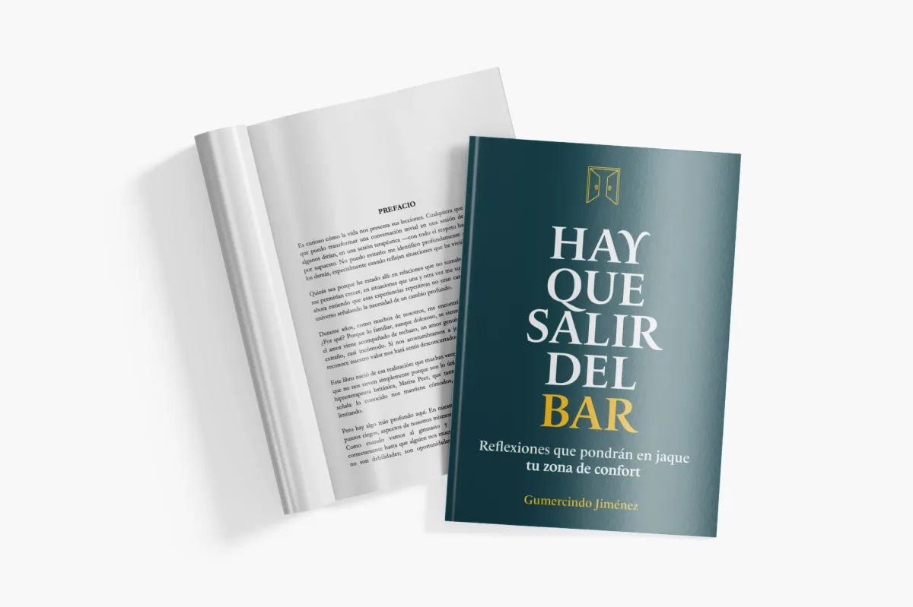
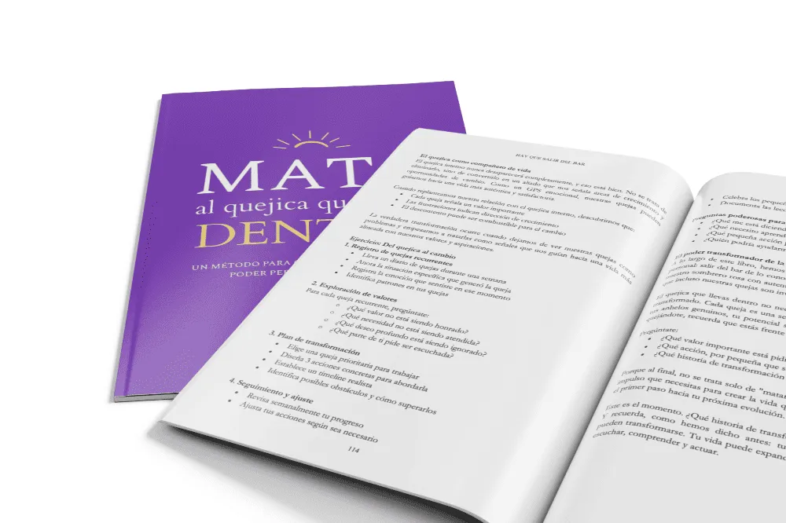

Instagram & LinkedIn
Piezas listas para publicar — Stories, feed vertical y cuadrado, horizontal y LinkedIn. Cada una con su copy persuasivo. Diseñá a 1080px reales; exportá por captura.
Servicios — Consultoría
Autoridad con alivio. El caos del dueño, convertido en método y dinero. CTA siempre hacia la auditoría gratuita.
Si tu negocio vive de urgencias, no de estructura…
ahí entro yo. Convierto el caos en un sistema que funciona con o sin vos.
Hook de servicios
El caos te encuentra. Yo lo convierto en método. 🔒→📈 Si tu negocio factura pero todo pasa por vos, no tenés un negocio: tenés un trabajo que no podés soltar. Pedí tu auditoría gratuita (valorada en $250) y llevate un plan de acción Mínimo Viable. Link en bio.
Durante 8 años transformé negocios desde adentro: del caos operativo a una máquina de atracción, conversión y fidelización. La diferencia nunca fue trabajar más. Fue tener un sistema. ¿Tu negocio depende de tu presencia para funcionar? Hablemos. Auditoría sin costo esta semana.
Del caos
al método.
Y del método,
al dinero.
Carrusel — los 3 frentes
No necesitás hacer más. Necesitás un sistema. 3 frentes donde entro yo: → Automatización: que el flujo trabaje por vos. → Ventas: embudos con criterio, no plantillas. → Negocio: SOPs y tableros para delegar con confianza. ¿Por cuál empezarías? Te leo 👇
Slide 1: "Trabajar más nunca fue la respuesta." Slide 2–4: un frente por slide (automatización / ventas / negocio) con un antes-y-después real. Slide 5: CTA a la auditoría. Tono: directo, con criterio, sin hype.
Al caos lo busco, y lo convierto en dinero.
Cita de autoridad
El caos no es tu enemigo. Es materia prima. La mayoría lo evita. Yo lo busco — porque ahí está la oportunidad que tu negocio no supo aterrizar. Guardá esta frase para cuando todo se sienta urgente. 🔖
"Al caos lo busco, y lo convierto en dinero." No es una pose. Es un método: ejecuto, documento, automatizo y escalo. El orden no mata la creatividad — la hace rentable.
El caos, convertido en método.
8 años transformando negocios que ya venden en sistemas rentables y sostenibles.
gumercindojimenez.comTarjeta de autoridad
La mayoría de los negocios no tiene un problema de ventas. Tiene un problema de estructura. Vendés, pero todo depende de vos. Crecés, pero el caos crece más rápido. Mi trabajo: convertir ese caos en un sistema que rinde con o sin tu presencia. ¿Te suena? Auditoría gratuita esta semana — comentá "ORDEN" y te escribo.
Libro — Hay que salir del bar
Reflexiones que pondrán en jaque tu zona de confort. Tono introspectivo, elegante, con un punto de provocación.
¿Y si tu zona de confort fuera el problema?

Reflexiones que pondrán en jaque tu zona de confort.
Conseguí tu ejemplar →Lanzamiento del libro
Lo cómodo no te está cuidando. Te está frenando. 🚪 "Hay que salir del bar" son reflexiones para poner en jaque tu zona de confort — el estancamiento, el miedo, el agotamiento. Ya disponible. Link en bio. ¿Estás listo para salir?
Escribí un libro sobre algo incómodo: la comodidad. "Hay que salir del bar" es un viaje de introspección para quien siente que su rutina lo atrapa. Sin fórmulas mágicas — con preguntas que importan. Disponible ahora. Te dejo el primer capítulo en comentarios.
Salí del bar.
Salí del molde.
Un viaje de introspección para desbloquear tu verdadero potencial.
Producto + promesa
Nadie crece desde la comodidad. 🌱 Este libro no te va a dar respuestas fáciles. Te va a dar mejores preguntas — las que evitás hacerte. "Hay que salir del bar", ya disponible. ¿Te animás?
Post de producto con foto real del libro en mano. Copy corto + 1 cita del prefacio. CTA suave a comentarios.
Diario de introspección — Mata al quejica que llevas dentro
Un método para convertir tus quejas en poder personal. Tono más filoso y directo — el lado Forajido de la marca.
Tu peor enemigo se queja con tu voz.

Un método para convertir tus quejas en poder personal.
Matá al quejica →Hook provocador
Quejarte se siente bien por 5 minutos. Después te deja igual de estancado. 🔥 "Mata al quejica que llevas dentro" es un método para convertir cada queja en una señal — y cada señal en poder personal. ¿Listo para callar esa voz? Link en bio.
La queja es información disfrazada de víctima. Detrás de cada "esto no funciona" hay un valor tuyo que no está siendo honrado. Mi nuevo diario de introspección es un método para escucharlo y actuar. "Mata al quejica que llevas dentro" — ya disponible.
Antes te quejabas. Ahora decidís.
- "No tengo tiempo"
- "Es muy difícil"
- "No depende de mí"
- "Elijo mi foco"
- "Empiezo pequeño"
- "Yo decido"
Antes / Después
La misma situación. Dos voces distintas. Una se queja y te deja donde estás. La otra decide y te mueve. El método del diario te enseña a cambiar de voz — en serio, con ejercicios. Guardá este post para tu próxima excusa. 🔖
Carrusel "De la queja al poder": 1 queja típica por slide y su reframe accionable. Último slide: el diario + garantía 30 días.